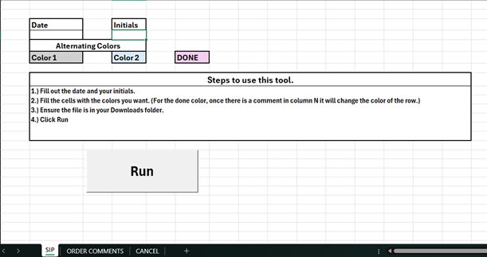
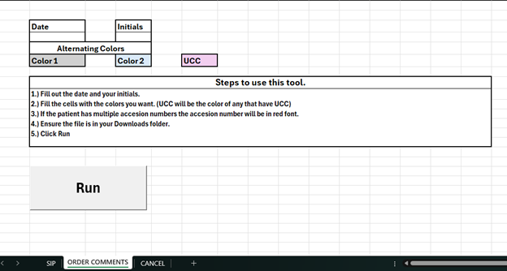
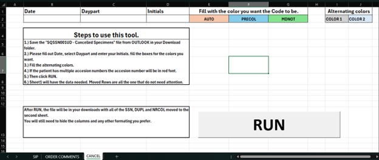

Combined Tool (SIP List, Order Comments, Daily Cancelled List)
Background
The Call Center uses three reports (SIP list, Order Comments, and Daily Cancelled list) generated up to three times a day. Staff spent ~15–40 minutes per report removing unnecessary data and formatting it into something usable.
Solution
Built an Excel + VBA tool to rename downloaded files using user-entered date/daypart/initials.
SIP list: remove unnecessary columns, add a Comments column, alternate row fills by MRN, flag multiple accession numbers (red text), and apply conditional formatting to mark completed rows.
Order Comments: alternate fills by MRN, flag multiple accession numbers (red text), and highlight UCC (Urgent Care) rows in a user-selected fill color.
Daily Cancelled List: move SSN/DUPL/NRECOL rows to a second sheet, alternate fills by MRN, flag multiple accession numbers (red text), and highlight AUTO/PRECOL/MDNOT rows in user-selected colors.
Impact
Reduced manual formatting time by up to ~9 hours on Mondays and ~3 hours per day Tuesday–Friday.

Sheet used to modify SIP List.

Sheet used to modify Order Comments

Sheet used to modify Cancelled List.